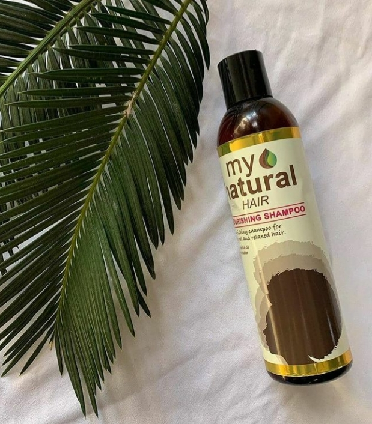
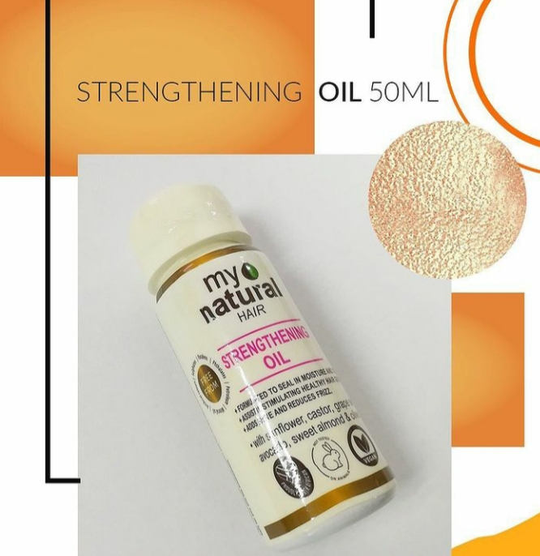

BLK_My Naturals is a haircare brand that is all about wearing your natural kinky hair with pride. Our products are made from strictly organic ingredients which helps give our naturals the healthy look it deserves. We have different products according to the different needs of the African natural hair. BLK_My Naturals helps you wear your natural curls like the Queen you are.
BLK_My Naturals Products
BLK_My Naturals NOURISHING SHAMPOO:250ml
Price: ₦ 3,500
PRODUCT DESCRIPTION BLK_My Naturals Nourishing Shampoo is formulated specially for natural hair. This product is made with a blend of jojoba oil, shea butter and chebe powder to nourish dry and itchy scalp while effectively removing dirt and product build-up. Wash hair with ample amount of BLK_My Naturals Nourishing Shampoo alongsides BLK_My Naturals Nourishing Conditioner to attain best results. Then, dry.
Similar BLK_My Naturals Products
-

Strenghtening Oil:50ml
PRICE:₦1,500
Voluminizing Moose:200ml
PRICE:₦2,500